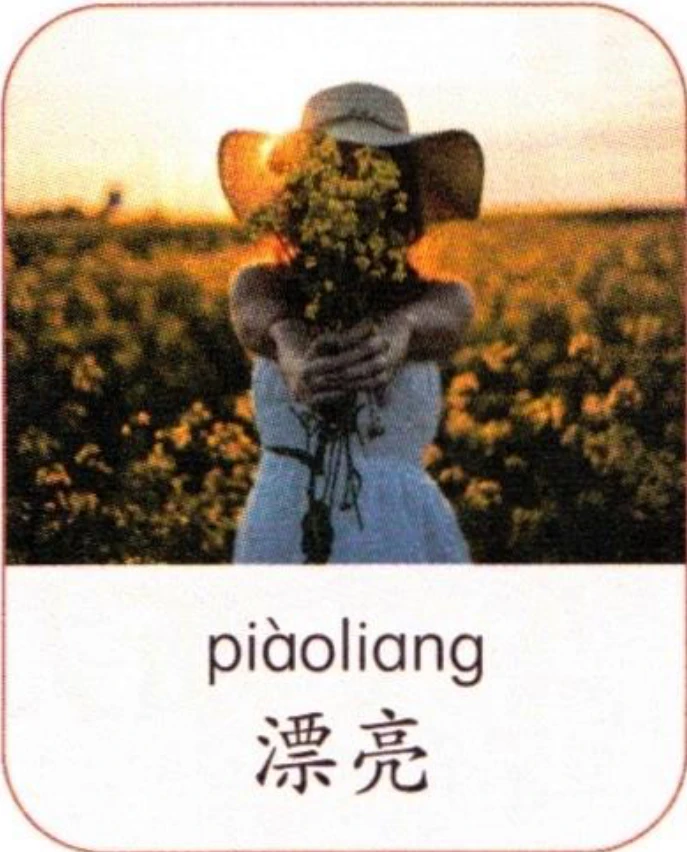
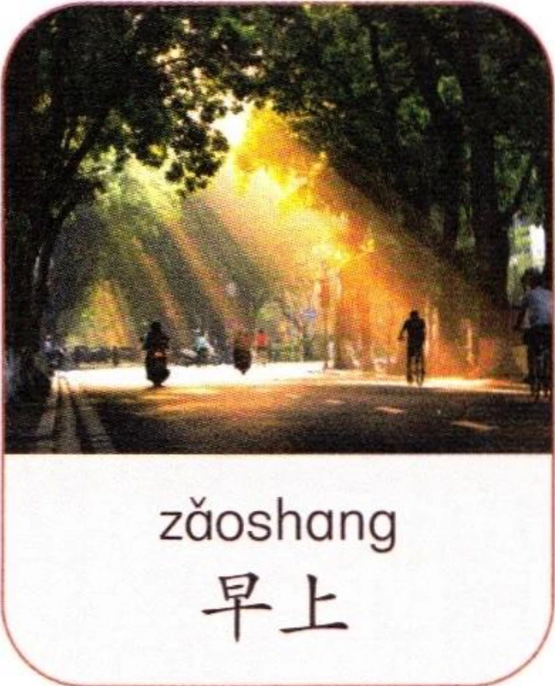

1听录音，选择听到的音节并大声朗读。Listen, choose the syllables you hear, then read aloud.Слушайте, выберите слоги, которые вы слышите, затем прочитайте вслух.
2听录音，先跟读，再大声朗读。注意三声变调。Listen and repeat the syllables, then read aloud. Note the sandhi of the third tone.Слушайте и повторяйте слоги, затем читайте вслух. Обратите внимание на сандхи третьего тона.
3听录音，先跟读，再大声朗读。注意轻声发音。Listen and repeat the syllables, then read aloud. Note the neutral tone.Слушайте и повторяйте слоги, затем читайте вслух. Обратите внимание на нейтральный тон.
4听录音，分辨轻声与非轻声，再跟读、朗读。Listen, distinguish between the neutral tone and the non-neutral tones, then repeat and read aloud.Слушайте, различайте нейтральный и ненейтральный тоны, затем повторяйте и читайте вслух.